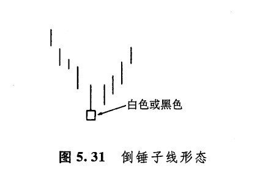
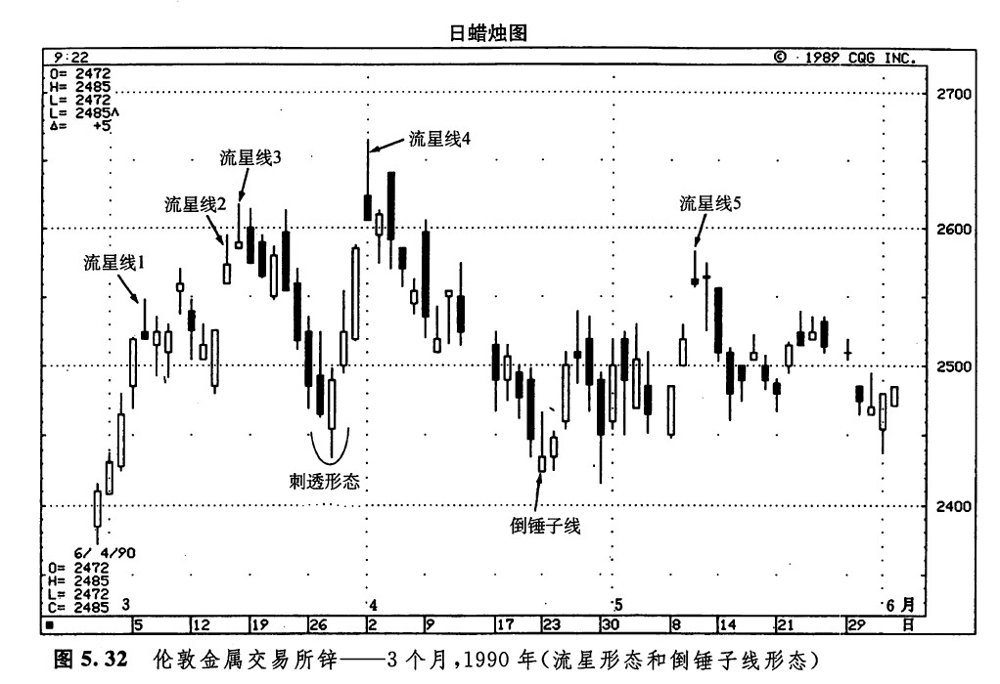
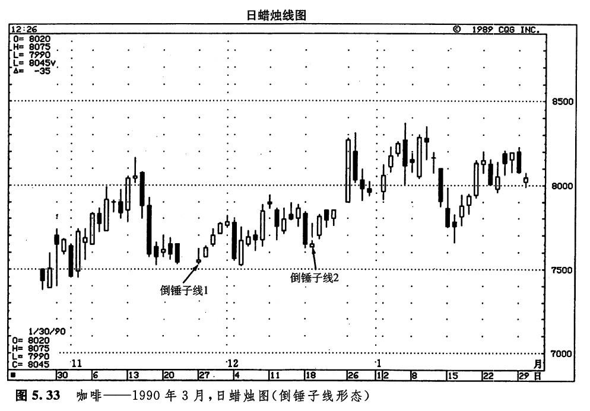

虽然倒锤子线不属于星线形态，但是因为它的外形与流星线相像，所以我们把它放在本章最后这个部分来讨论。如图5.31所示，倒锤子线看上去与流星线颇为相像，它也具有较长的上影线，较小的实体，并且实体居于整个价格范围的下端。但是不同的是，流星线是一根顶部反转蜡烛线，而倒锤子线却是一根底部反转蜡烛钱。如果倒锤子线出现在下降趋势之后，则构成一个看涨的蜡烛图形态，这一点与普通的锤子线如出一辙。

让我们回头再看看前面讨论过的图例5.27。请注意6月4日的看涨吞没形态的第一根蜡烛线。它的外观与流星线并无二致（这样的蜡烛线实体的颜色是无所谓的）。在这个实例中，这根蜡烛线处于下降趋势内，因此，成为一个潜在的看涨倒锤子线。
在分析倒锤子线时，有一点非常重要：当倒锤子线出现后，必须等待下一个时间单位的看涨信号对它加以验证。倒锤子线的验证信号可能采取下面这样的形式：倒锤子线次日的开市价向上跳空，超过了倒锤子线的实体。向上跳空的距离越大，验证信号就越强烈。还可能采取另外一种形式：倒锤子线次日是一根白色蜡烛钱，并且它的价格均处在较高的水平。
对于倒锤子线形态，之所以说看涨验证信号非常重要，是因为形成倒锤子线的价格变化过程看起来似乎是看跌的。这就是说，在倒锤子蜡烛线当日，市场的开市价位于当日最低价处，或者接近最低价。后来，市场上涨了，但是牛方元力将上涨行情维持下去。最后，市场收市于当日最低价，或者在最低价的附近。为什么这样的蜡烛线竟然是潜在的看涨反转信号呢？其解答必须从下一天的行情中寻找。如果下一日市场开市于倒锤子线的实体之上，则意味着凡是在倒锤子线当日开市和收市时卖出做空的人现在统统处于亏损状态。市场维持在倒锤子线实体之上的时间愈久，则上述空头止损出市的可能性愈大。在这种情况下，首先可能引发空头平仓上涨行情，然后，空头平仓上涨行情可能促使企图抄底做多的人跟风买入。这个过程自我循环，市场螺旋上升，结果就可能形成一段上升趋势。
在前面讨论的玉米市场的实例中，在倒锤子线后面是一条坚挺的吞没线。这根蜡烛线就充当了这条倒锤子线的验证信号。
如图5.32所示，流星线1使市场放松下来，从先前剧烈的上冲状态转化为实质上的水平交易区间。在流星线3之后，出现了一根黑色蜡烛线，这么一来，一方面完成了一个看跌吞没形态，另一方面也验证了流星线的顶部反转信号。3月27日和28日组成了一个剌透形态，它结束了从流星形态3开始的下跌过程。以这个剌透形态为基础，市场开始上涨。后来，这段上涨行情终止于流星线4。请留心观察流星线4后面的下降趋势是在何处终了的——那便是4月21日的倒锤子线。它的次日是一根较高的白色实体，由此确认了这根倒锤子线的信号。倘若这个白色实体再长一些，那么我们就可以说这里出现了一个看涨的启明星形态（如果这根白色蜡烛线的实体较长，那么，倒锤子线之前的黑色实体、倒锤子线本身、倒锤子线之后的这根白色实体，将组成一个三蜡烛线的启明星形态）。由这条看涨的倒锤子线引发的上冲行情推动了价格的上涨，直到另一个——您猜着了——流星形态出现，这段上升趋势才结束。这就是流星线5。

在图5.33中，也有一些倒锤子线的实例。请注意，倒锤子线1和2是如何为它们次日坚挺的价格变化所验证的。再强调一下，倒锤子线必须得到进一步的验证，这一点非常重要。倒锤子线2是图示启明星形态的一个组成部分。

下一篇：第六章 其他反转形态
上一篇：流星形态与倒锤子形态